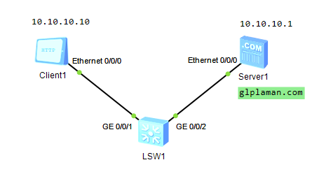
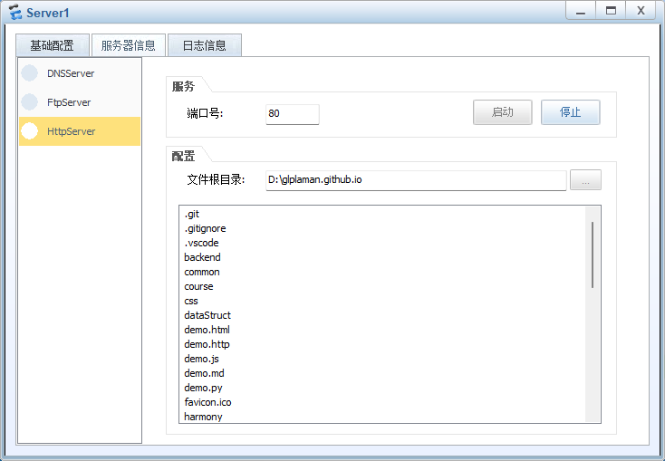
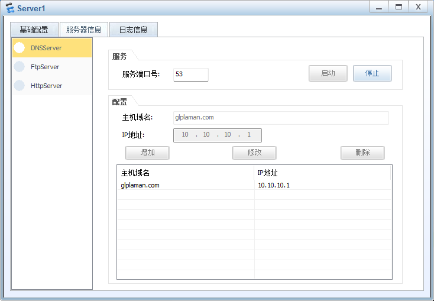
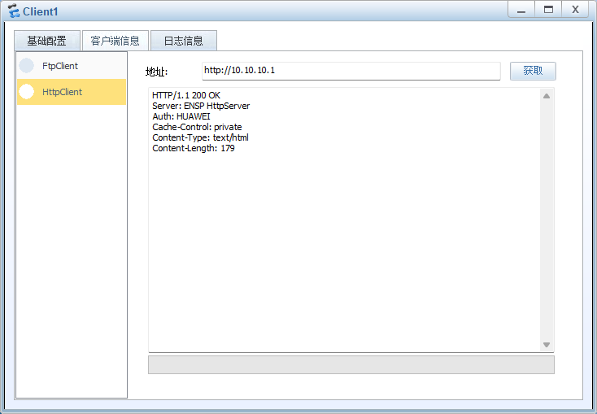
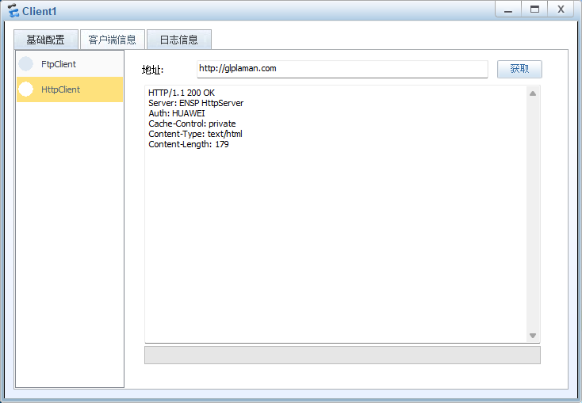
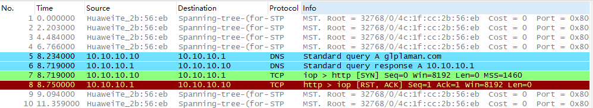
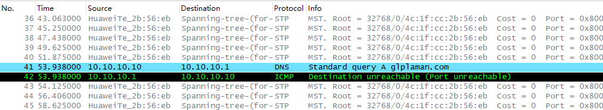
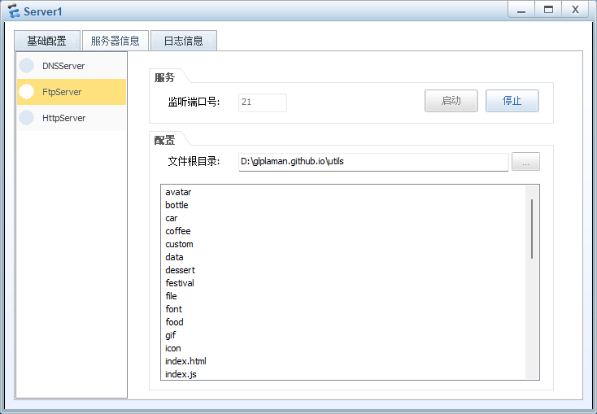
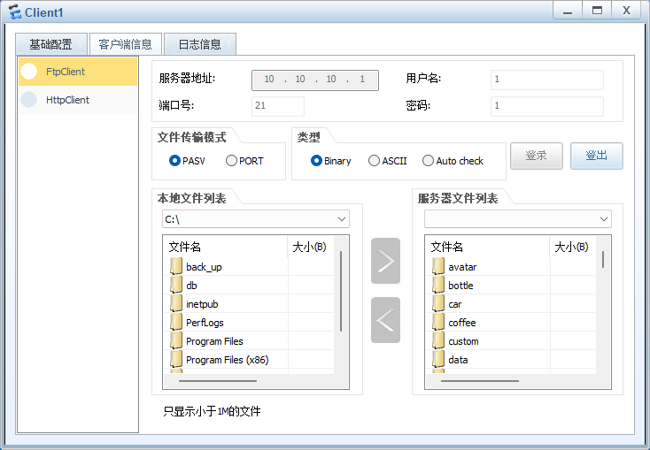

- 创建拓扑

创建拓扑
- 配置IP地址
- Server 配置 HttpServer 服务器
保持默认 80 端口（无法修改）
指定网站根目录
启动服务

Server 配置 HttpServer 服务器
- Server 配置 DNSServer 服务器
保持默认 53 端口（无法修改）
指定网站域名和对应的IP并增加
启动服务

Server 配置 DNSServer 服务器
- Client 使用 IP 访问 HttpServer 服务器

Client 使用 IP 访问 HttpServer 服务器
- 使用 Wireshark 查看使用 IP 访问的过程
- Client 使用域名访问 HttpServer 服务器

Client 使用域名访问 HttpServer 服务器
- 使用 Wireshark 查看使用域名访问的过程
- 访问一个不存在的资源，查看返回的信息并分析
HTTP/1.1 404 Not Found
Server: ENSP HttpServer
Auth: HUAWEI
Cache-Control: private
Content-Type: text/html
Content-Length: 166
- 仅关闭 DNS 服务器，访问网站，查看返回信息并分析
- 仅关闭 HTTP 服务器，访问网站，查看返回信息并分析
- 分析下面各图可能产生的原因

抓包1

抓包2
- Server 配置 FTPServer 服务器
保持默认 21 端口
指定文件根目录；提前准备一些资源
启动服务

Server 配置 FTPServer 服务器
- Client 配置 FTPClient 客户端
指定服务器地址 10.10.10.1
保持默认 21 端口
指定用户名和密码，登陆（Server 是一个轻量级的 FTP 软件。默认允许匿名登录（Anonymous），或者对任何用户名和密码都放行）
右侧获取到 FTP 文件资源
利用中间的 ←、→ 实现资源的下载或者上传

Client 配置 FTPClient 客户端